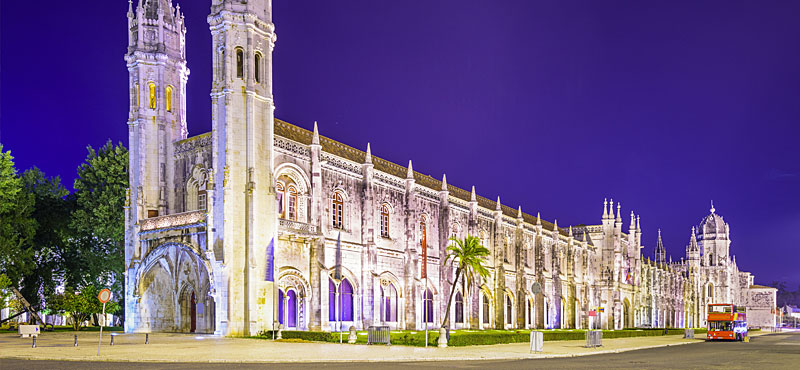
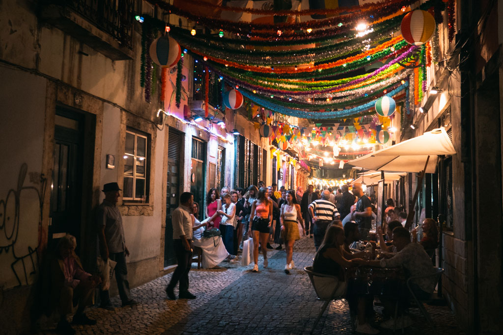
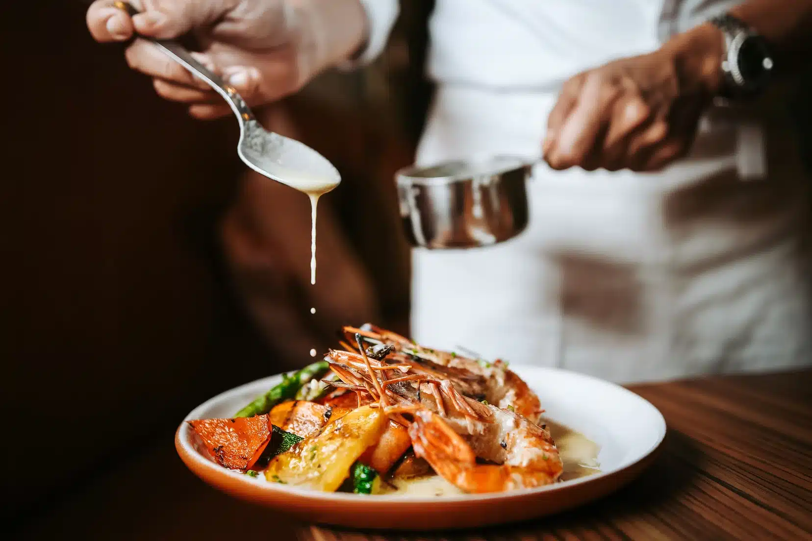
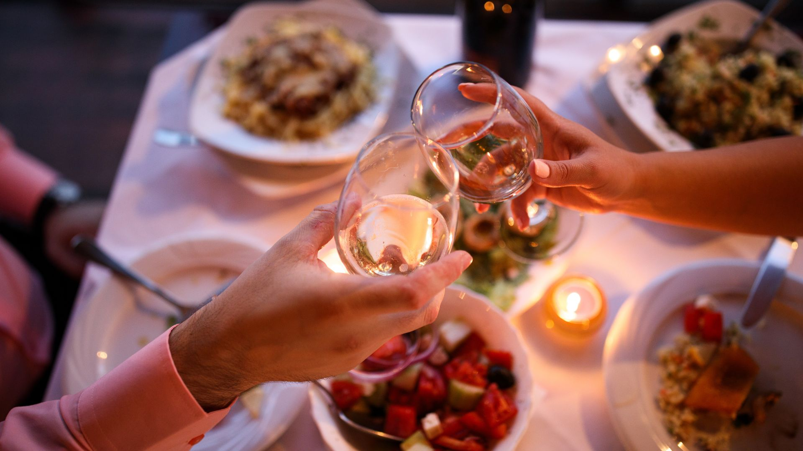
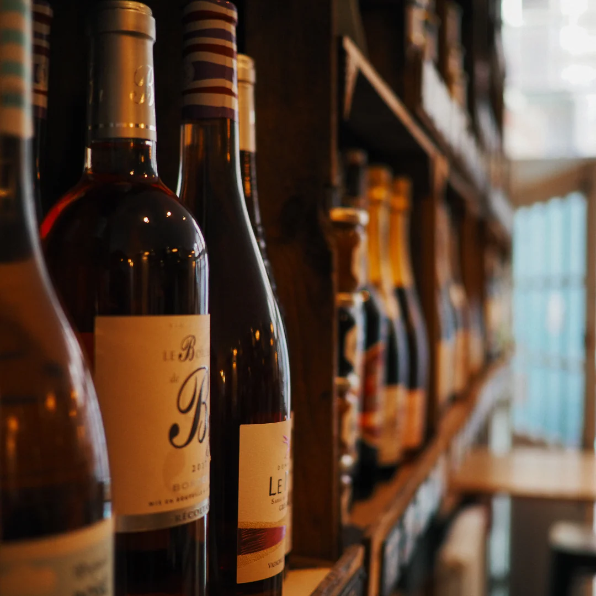

A Vibrant European Capital



Lisbon is consistently ranked among the safest cities in Europe, offering a secure and relaxed environment for international visitors. Participants can move freely and confidently throughout the city, whether attending sessions, exploring historic neighborhoods, or enjoying evening events.


Portugal is internationally recognized for its hospitality. Visitors are welcomed with warmth, openness, and a genuine sense of friendliness. English is widely spoken, making communication easy and ensuring a smooth and enjoyable stay for all attendees.



A successful conference is not only defined by its technical content, but also by the overall experience of its participants. Lisbon offers a rare balance of safety, vibrancy, and hospitality, creating the ideal environment for networking, collaboration, and memorable moments.
A city that makes participants feel at home — from the first moment.